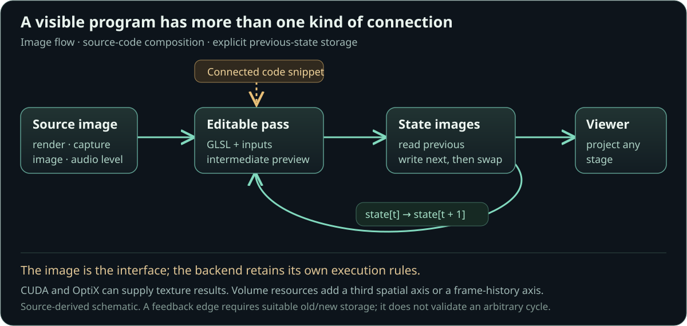
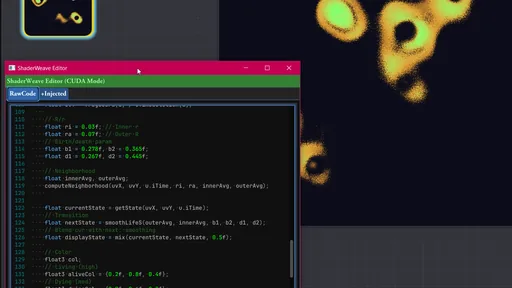
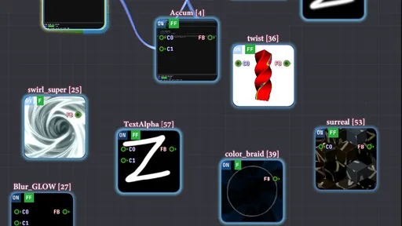
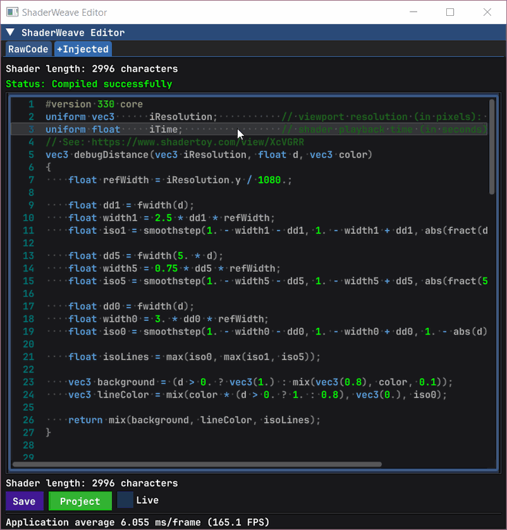
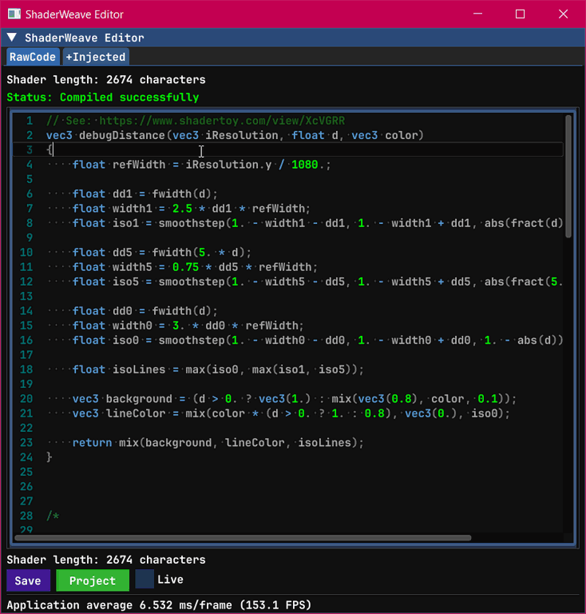

The graph is the program
Explicit channels and feedback describe multipass behavior that a single final-image shader editor conceals.
A desktop shader designer focused on both convenience and breadth: work with GLSL, CUDA and OptiX in the same network while inspecting intermediate results together. Compose and connect render passes intuitively, and attach live previews to make debugging easier.
Explore connections Brochure · 14 chapters ↓
A final frame hides the network that produced it. ShaderWeave exposes that network as an editable, continuously visible object.
GLSL programs and Shadertoy-style channels provide the starting vocabulary.
A node's output becomes an input to another stage.
Persistent buffers and feedback links make time part of the topology.
Intermediate previews connect a local code change to the final behavior.
Explicit channels and feedback describe multipass behavior that a single final-image shader editor conceals.
Node previews expose the state of accumulations, transformations and simulation loops as they run.
CUDA and OptiX paths can supply framebuffer textures to shader experiments without claiming one universal execution model.
Raster-stage sockets, code snippets, capture textures and audio level histories extend the graph. Audio visualization uses envelopes, rather than a frequency transform.
Related techniques belong to one family. Follow a family into the interface, recorded results and mathematical detail.

01 / 04Build GPU programs from connected passes, with each pass’s code, inputs and output visible.

02 / 04Compose different GPU programming models while retaining their compilation and launch boundaries.
Make previous state and cross-pass dependencies explicit in evolving visual systems.

04 / 04Keep source data, intermediate activity and the final view visible within one workspace.
ShaderWeave is a desktop workspace for building shader systems. Source code, texture connections, persistent state and intermediate images stay visible together. Follow an edit through a multipass effect, a simulation loop or a CUDA/OptiX program, then inspect the stages that produced the final image.
Scan the descriptions and figures, or open a layer for the implementation and mathematical detail.
Build GPU programs from connected passes, with each pass’s code, inputs and output visible.
A final image hides the program that produced it. ShaderWeave puts source editors, resource connections and live previews in one workspace. Each pass can be edited and inspected on its own, then connected to a larger system.
A fragment shader can remain a compact sketch. A larger experiment can combine persistent simulations, intermediate images and heterogeneous GPU work without hiding their dependencies inside one long program.
The desktop engine uses OpenGL/GLSL, including compute passes and persistent resources, with separate CUDA and OptiX integrations. Related browser experiments in WebGPU Atelier and RIVX explore similar graph ideas through their own implementations.
The workbench is my project; several shader artworks running inside it come from other creators. Those examples demonstrate importing, connecting and modifying GPU programs. Their original visual designs are credited separately below.
ShaderToy-style programs enter through the source library or pasted code. The wrapper supplies the expected entry point and familiar inputs such as time, resolution, mouse state and channels.
Raw and injected source views show both the authored program and the declarations presented to the driver. Expected buffers, samplers and feedback history still need matching graph resources; universal ShaderToy compatibility has not been established.
| Visible item | What it explains |
|---|---|
| Raw source | The pass as written or imported |
| Injected source | Generated declarations and wrapper used for compilation |
| Channel connections | Which image or retained buffer each sampler reads |
| Compile feedback | Whether the concrete assembled program compiled |


The editor derives resource sockets from shader declarations and recognized conventions. Read-only and write-only image access, texture dimensions and resource roles remain visible instead of collapsing every connection into an untyped wire.
Snippet nodes supply reusable GLSL code rather than a rendered texture. The receiving shader gathers connected snippets before compilation. This makes shared functions editable in the graph while keeping the code-generation step inspectable.
The editor includes fixed-resolution 2D texture nodes alongside mutable volumes. A smaller working image can feed a larger display without implying that the underlying simulation ran at display resolution. The receiving pass still needs compatible formats, access modes and synchronization.
| Connection | Meaning | Visible consequence |
|---|---|---|
| Texture / cube / volume | Runtime image data with a dimension and binding | The receiving pass previews transformed data |
| Snippet | GLSL source inserted before the user program | Connecting or removing shared code recompiles the target |
| Fixed-size texture resource | A persistent 2D allocation independent of the window | Writing through it resamples to the chosen resource size |
| Feedback | A previous-state dependency | Separate read/write storage preserves the old state |
Hot swapping replaces the producer of an input while retaining the downstream processing chain. An image, generated texture or rendered view can feed the same effect when its interface is compatible. This is useful for testing what belongs to the algorithm and what belongs to its source data.
The dynamic skybox example extends the idea to a surrounding environment. The environment is a resource supplied by the graph, so changing its producer can alter the scene without rebuilding the whole composition. The practical boundary is compatibility: dimensions, formats and update behavior still need to match the consumer.
Compose different GPU programming models while retaining their compilation and launch boundaries.
The editor exposes vertex and geometry programs through a dedicated source menu. Stage sockets can supply a vertex program directly to a fragment pass, or carry it through a geometry stage. The receiving node assembles the linked raster program rather than mistaking those connections for sampled images.
This opens a different experiment from a post-processing chain: a source edit can change how vertices move or how primitives are emitted before the fragment program colors the result. The source tree includes wave/twist vertex examples and wire-sphere or spring-like geometry examples. These examples are present in the source collection; the recordings below cover the image-processing workflows.
When the source detects gl_FragDepth usage, the node provisions depth textures and exposes a depth output. A downstream view can then inspect depth independently of color. The detector is an implementation convenience, not a full semantic GLSL analysis, and connected-resource lifetime still matters when the source changes.
| Socket | Carries | Role |
|---|---|---|
| VS | Vertex-stage source | Transform incoming vertices |
| GS | Geometry-stage source | Change emitted primitive geometry |
| SNP | Shared GLSL definitions | Compose reusable source before compilation |
| D | Sampleable depth output | Inspect or consume depth written by the shader |
CUDA nodes compile through NVRTC and supply image results through registered GPU resources. OptiX nodes provide programmable ray traversal and custom output. Both can become sources for downstream GLSL work, while retaining separate compilation, launch and synchronization requirements.
The phase-oriented OptiX recording belongs to custom ray programs and their accumulation model. OptiX itself is not a wave-equation solver. CUDA and OptiX require the corresponding NVIDIA runtime and hardware.
| Producer | Execution model | Interface to the graph |
|---|---|---|
| Raster / compute GLSL | Draw or compute dispatch | Bound textures and images |
| CUDA | NVRTC-compiled kernel launch | Registered output texture/resources |
| OptiX | Ray programs and acceleration traversal | Custom output presented as a texture |
Make previous state and cross-pass dependencies explicit in evolving visual systems.
A persistent simulation must distinguish the state being read from the state being written. Ping-pong resources supply that distinction: one image contains the previous state, another receives the next state, and their roles swap after the update. A feedback edge therefore means a temporal dependency, not an instruction to recursively evaluate a cycle in the same frame.
The SmoothLife and compute examples make the dependency visible. The recording with ping-pong buffering disabled is deliberately a failure demonstration: simultaneous reads and writes create a conflict, and the resulting appearance is not a valid alternative simulation. Accumulation buffers use the same resource idea for a different purpose, retaining previous contributions instead of evolving a local field. Resetting their history is part of changing the experiment.
A rolling volume writes each source frame into another depth slice. The storage wraps; the viewer unwraps it into chronological order. A moving image becomes an inspectable time stack.
The documented example can record a shader, image, editor, screen or simulation. Volume depth sets the retained number of frames, while display rate determines how those frames relate to elapsed time. The small mutable volume is a practical starting resource.
| Producer → receiver | Role |
|---|---|
| volume_ring_source → compute_frame_to_volume_ring.inputTex | Current source frame |
| Volume_Empty_IO_Small.Vol → compute.ringVolume | Persistent writable 3D storage |
| compute.volumeOut → volume.iVChannel0 | Return the written resource to the volume node |
| volume.Vol → volume_ring_view.iVChannel0 | Unwrap the ring for viewing |
Diffusion Fusion separates transport, broad luminous structure and local sharpening into three interacting stateful passes. Each pass retains its own previous state; additional connections exchange outputs and the animated source.
The final composition can hide a clipped channel or runaway state. Projecting A, B and C individually locates the pass that introduced the behavior. This is a visual feedback experiment rather than a calibrated reaction–diffusion model.
| Pass | Reads beyond its own previous state | Purpose |
|---|---|---|
| A_Diffuse | Source + C_Reaction | Carry and diffuse the injected signal |
| B_Fuse | A_Diffuse + Source | Combine and swirl the broader field |
| C_Reaction | B_Fuse + Source | Sharpen and feed detail back |
| Final | A + B + C + Source | Compose the visible result |
Keep source data, intermediate activity and the final view visible within one workspace.
Images, HDR environments and supported geometry or volume resources can be loaded, connected and inspected in the workspace. Drag-and-drop reduces the cost of replacing an input without rebuilding its consumers.
Viewers expose orientation, dynamic range and empty or unexpected output. Asset compatibility remains specific: HDR data needs meaningful exposure, volumes need a viewing convention, and a model needs attributes expected by its shader. Video-file drops currently report that decoding support is pending.
The editor and node workspace can render into framebuffers and become image inputs themselves. The same shader graph can project text into a scene or transform its own interface.
The editor also exposes desktop and selected-window capture. Windows capture paths try a modern texture source and retain platform fallbacks; an explicit capture-node control and window selector govern the input. Capture compatibility depends on the application and the available Windows capture path.
System-audio loopback and audio-file playback turn measured amplitude into graph resources. Their level history can drive a visual effect alongside the source sound, giving the connection a concrete signal to inspect.
The audio implementation averages absolute sample magnitudes, keeps recent levels and smooths the displayed value. It is an amplitude envelope/history, not an FFT or a frequency-bin analysis. MP3, FLAC and WAV decoding depends on the miniaudio build path.
| Input | Computed signal | How it joins the graph |
|---|---|---|
| System sound | Absolute channel levels, smoothed history | A rendered level-history texture |
| Audio file | Decoded playback plus level history | AUDIO preview and a small VOL level texture |
| Selected window / desktop | Captured image | Image input to a shader or frame-history volume |
The application keeps intermediate images and active connections visible, so a problem can be traced back to the pass that introduced it. The launched build uses the implementation in legacy_sw; despite the folder name, this is the current desktop application. A second graph implementation at the source root remains separate.
The active path builds a render plan from connected components, the projected node and selected special outputs. It caches that plan by graph/selection revisions and visits each node once while constructing the preview order. Separate preview and viewer paths can still request additional evaluations; the plan alone does not guarantee one GPU execution per node per frame.
Active nodes and links share the render-plan information with their visual overlays. Disconnected experiments can remain on the canvas while attention and work follow the selected component; transient previews have their own invalidation path.
The menu exports network snapshots and can save temporary source first. A .lfnet.json example is included, but a complete save-and-reopen cycle still needs verification. Scheduling performance, capture compatibility and audio behavior also need more runtime checks.
ShaderWeave’s contribution is the desktop editor, graph, resource routing and GPU execution system. Imported shader artwork keeps its own authorship. These credits are transcribed from the retained source headers; the links lead to original works or creator sites.
The recordings show adapted inputs, graph wiring and, in some cases, combined effects. That integration does not make the underlying shader artwork my own.
| Creator | Work or examples in the source collection |
|---|---|
| Inigo Quilez · iq | Snail (featured in the hot-swap recording), Clouds, Flame, geometric primitives and fractal studies. |
| nimitz · stormoid | Protean Clouds, Plasma Globe, Auroras, Ether, Magnetismic and Overly Satisfying. |
| Florian Berger · flockaroo | Ink, ballpoint and oil-paint treatments; computational flockarooid dynamics, Solder and voxel drawings. |
| Pablo Roman Andrioli · Kali | Star Nest. |
| Reinder Nijhoff | Bidirectional Path Tracer 2, Cameras and Lenses, Matrix Rain and Ray Tracing: The Next Week. |
| David Gallardo · xjorma | Icing Donut, Intestunnel, Morph, Torus and the multipass smoke example. |
| Stéphane Cuillerdier · Aiekick | Candy, ray-marched honeycomb and Swirl. |
| Matthew Arcus · mla | Hypercube and Möbius studies; adaptations of Kleinian and hyperbolic examples. |
| Per Bloksgaard | Ray-traced antigravity jellyfish. |
| hlorenzi | Hand-drawn Sketch Effect. |
| bitless | Sacred Timeline Anomaly and the surreal/web studies. |
| P_Malin | TimeWarp. |
The broader source collection also names the creators and contributors below. This is a source-header inventory, not a claim that every listed shader appears in every recording. Some older imports retain incomplete provenance; unverified names are not guessed.
| Creator or contributor | Retained attribution |
|---|---|
| Martijn Steinrucken · BigWings | Math Zoo — Alien Orb. |
| Sébastien Hillaire · SebH | Bunny volume study. |
| Ramon Viladomat | Desk and planet studies. |
| Christopher Wallis | Volumetric ray-marching study. |
| soma_arc / Kazushi Ahara | 3D kissing fractal. |
| evilryu; adaptation by mla | Appo+X fractal. |
| Jos Leys; adaptation by Matthew Arcus | Kleinian-group construction. |
| stb; animation by mla | Hyperbolic Poincaré study. |
| Blackle Mori | Monkey and Ribbon Wax. |
| Pascal Gilcher | HCURVE_B shader. |
| al-ro | LC multipass example. |
| GLtracy | Eclipse. |
| Duke | Volumetric Explosion. |
| XT95 | Volume raycasting in Cloudy. |
| dila | TheGrid / Kaleidoscope. |
| CMH | Tempered and Vbox. |
| Leon, as signed in the source header | Chain sketch; its header also credits IQ, Mercury, LJ, Koltes and Duke for supporting code. |
| Leon Denise | Taste of Noise 7. |
| Mario Klingemann · Quasimondo | Trained and customized SIREN model. |
| Ian McEwan / Ashima Arts; Dave Hoskins | Noise and hash routines credited within imported examples. |
| asalga; phi16; fizzer | Supporting sphere-rendering, domain-coloring and vector-output contributions. |
| Diffty | Music credited by the Inercia Royaliptic example. |
I wrote ShaderWeave almost entirely by hand, with AI used during later polishing phases. The original project established the live node-and-buffer workflow; the newer source explores a revised graph interface and execution paths.
The earlier showcase remains available with its original screenshots. Those captures document the existing project history; a new recording should show the current feedback and preview behavior before claiming a performance improvement.
Open the earlier showcase →